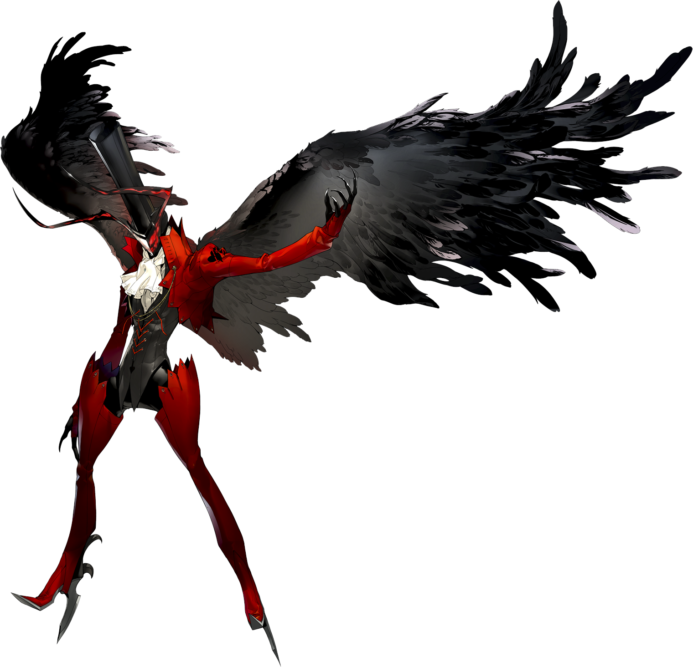

Joker
*actually Ren Amamiya(anime) or Akira Kurusu(manga)
Joker is a criminal and a trickster
In the game, Akira is taken in by a man of the name Sojiro. He attends Shujin Academy and meets Ryuji, who is running late to school. They walk to school together and become friends, but before they know it, they are brought into a palace. They meet their P.E teacher; Kamoshida. Kamoshida sends them to a cell and decides to kill Ryuji. Akira awakens his persona Arsene, saving Ryuji in the process. They find the treasure of
Arsene
Arsene is Joker's persona
He was based off something Maurice Leblanc had wrote. He is the master of disguise He was written as a villian of Sherlock Holmes